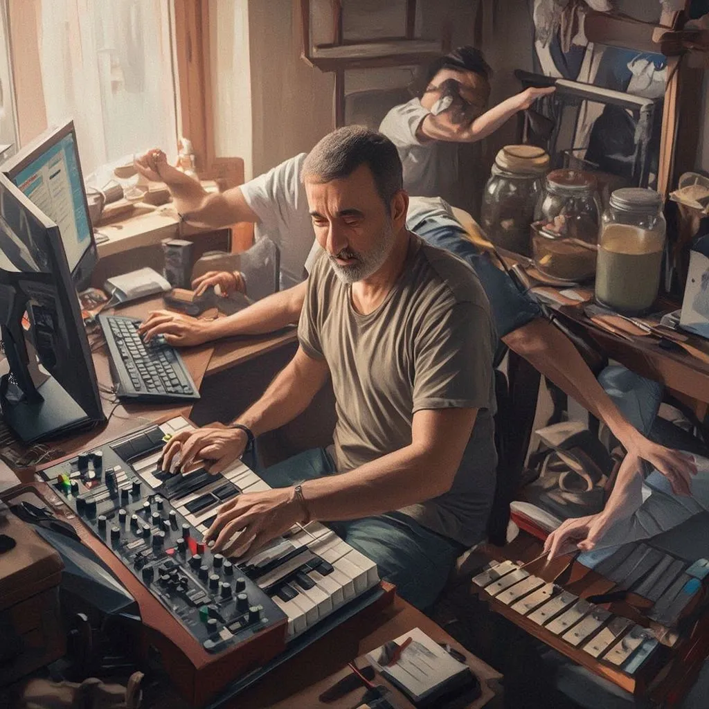
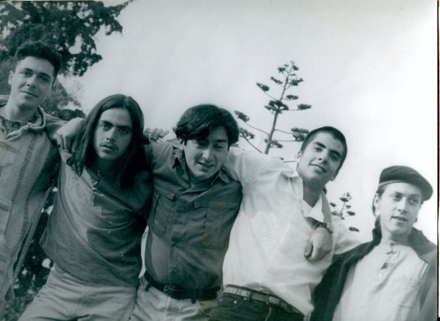
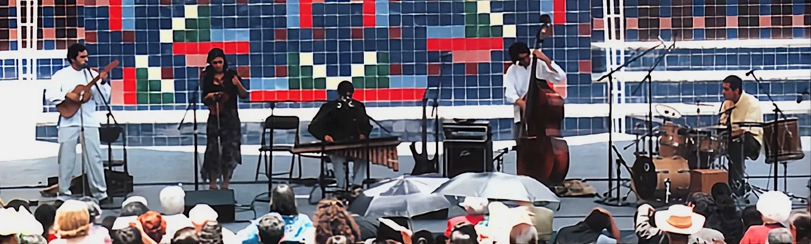
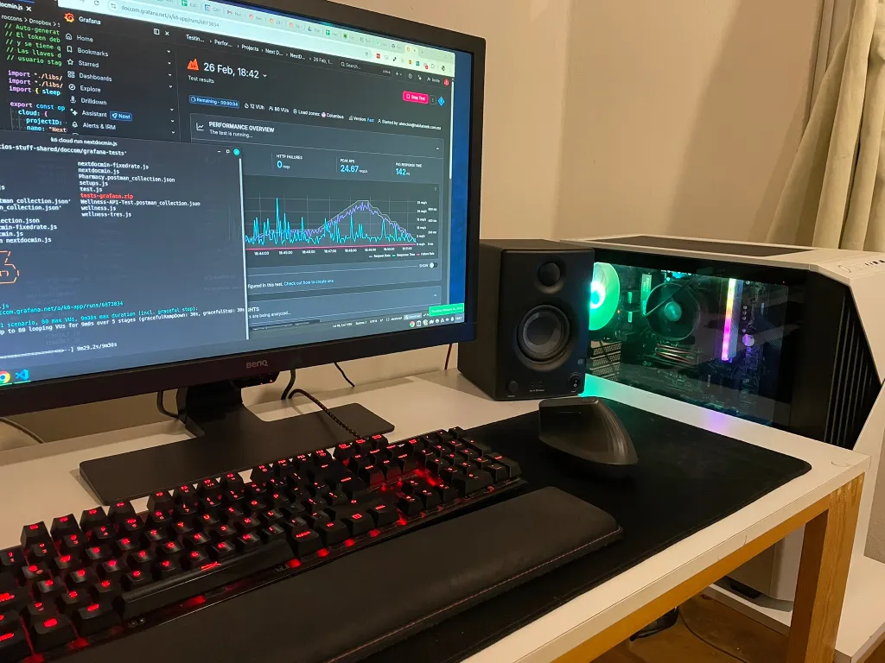
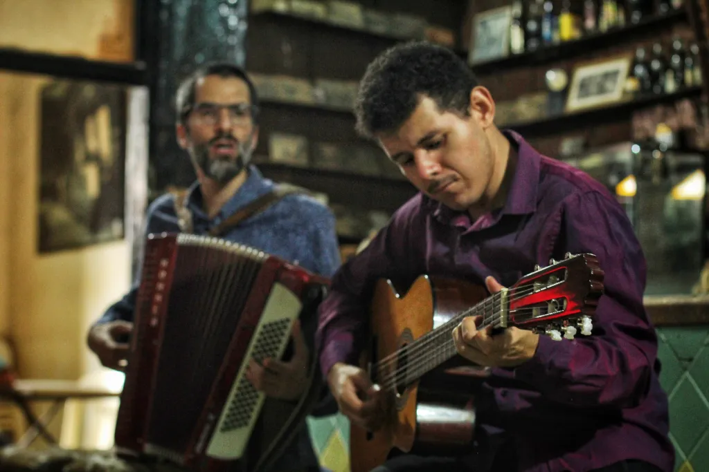
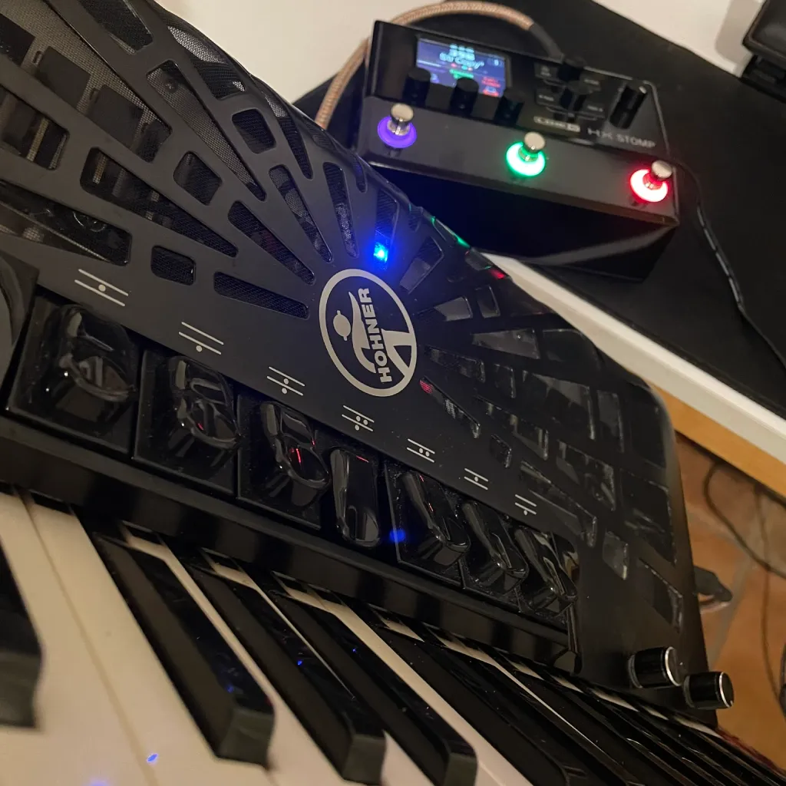

root_problem
Tengo un problema: me gusta hacer muchas cosas diferentes y además me gusta dedicarle tiempo y amor a las cosas que me gustan. Y tengo una familia a la que amo y que también requiere tiempo y atención. Por lo tanto suelo tener la sensación de que nunca hay tiempo suficiente.
Me encanta inventar todo tipo de cosas; principalmente música (piezas para piano, canciones, arreglos), invento soluciones informáticas, elaboro bebidas fermentadas, escribo (muy de vez en cuando) y experimento distintas formas de preparar café, así como innumerables maneras de hacer un buen sándwich.

roccons
Cuando era niño me inventé un nombre: roccons. ¿Por qué roccons? Porque sonaba bien y porque empezaba igual que mi nombre. Ese nombre era la marca que usaba para crear diseños: coches, plumas… casas quizás. Roccons fue resurgiendo a lo largo de los años, primero como mi alter ego para hacer música electrónica con un freeware maravilloso llamado Jeskola Buzz.
roccons, "100bpm". Circa 2000.
AVISO: Estoy preparando el lanzamiento de un álbum digital
con los tracks que produje ¡hace más de 25 años!
roccons + Tapir Trip + Silvie Henry, "Telepong".
A lo largo de los años, el nickname roccons ha ido ganando más protagonismo, me acompañó en numerosos foros de Internet y posteriormente en Twitter, Instagram, Youtube y muchos otros espacios.
yearning_for_the_future
Cómo amé los foros de Internet, donde sucedía la magia, y cómo amé también la web en su versión aún más primitiva: el hipertexto (esa red orgánica en la que todo tipo de información, antes inaccesible, iba brotando y se iba interconectando entre sí). Todo esto antes de que el dichoso SEO, el marketing despiadado, y las fábricas de contenido desechable (conocidas como redes sociales), fueran destruyendo ese caótico y hermoso paraíso digital primigenio.
blockquote
Desde distintos campos teóricos, el hipertexto es planteado como un objeto modular, reticular y multidireccional
(Bettetini et al., 1999: 29)
main_projects
Durante algunas vidas fui músico y participé en proyectos como La Mala Sangre (proyecto de música original en el que mi hermano Manuel tocaba los sintetizadores y yo tocaba congas, bongós, güiro y un bote de leche), el Tilingo Lingo (donde recreábamos sones del sur de México y Centroamérica, con marimba nicaragüense y un ensamble instrumental híbrido), y Egiptanos (donde explorábamos las músicas gitanas del mundo).
Durante otras vidas me dediqué a hacer sitios web y me decía a mí mismo que en algún momento lograría combinar mi actividad de desarrollador web con la de músico. Y ese momento a veces llegaba (Mamá Chilindrá, Lunfardo, Placa Placa Coatepec) y se volvía a ir, pero a estas alturas se puede decir que lo conseguí. He aprendido a quitarme de encima la compu para ponerme el acordeón, la marimba de arco, o el piano, y después regresar a la compu.

Ulises Garrido, Manuel Mejía, Alberto Herrera, Rodrigo Mejía y Camilo Mejía.

Tilingo Lingo, "El Zanatillo", del disco "De la flor en su florear". Año 2002.
Escuchar cover que hizo Eugenia León al tema "De la flor en su florear"
Mi composición "Solar" tomó otra dimensión con el proyecto Egiptanos.
Grabado en un concierto en "La planta de luz", posiblemente año 2003.
Advertencia: ¡12 minutos!
En 2018 aconteció un insólito ensamble de marimbas del mundo.
Placa Placa Coatepec, Patacoré.
Escuchar álbum en Spoti o álbum en Youtube.
aside
Tengo una hermosa compu "gamer" que uso para jugar a crear máquinas intangibles, que es de lo que se trata ese asunto de la programación. También es un fascinante laboratorio para trabajar en la música. Por supuesto, utilizo Linux.

the_dream
Ahora también canto.
Siendo sincero siempre lo he hecho, pero antes más a escondidas y un poco a empujones. Ahora canto cada vez más y quiero creer que cada vez mejor y eso es un sueño para mí, pues siempre anhelé como algo inalcanzable, el poder cantar y que la gente quisiera escucharme. Decía que usaba el acordeón para reemplazar a mi voz rota, pero ahora soy feliz mostrándole al mundo esa voz rota, esa voz mía.
¡Cantando tango en Buenos Aires!
Agradezco profundamente a quienes me han ayudado a conseguirlo, especialmente a mis maestras Silvana Sosto y Paty Ivison, así como a los compañeros de los proyectos donde he tenido la oportunidad de combinar la voz de mi fuelle con la de mi garganta, como en los Musicoculturistas y en esos proyectos con los que navegamos los caudalosos afluentes de la música argentina: Reina Milonga y La Peña Xalapeña.

Los ejes de mi carreta, interpretada con Reina Milonga.
Extraído de la sesión en vivo grabada en RTV Música. 2023.
wishlist
- Actualmente estoy reincorporando mi pasión por la experimentación sonora: le instalé un sistema de microfoneo Harmonik AC 501-PLUS a mi acordeón, lo que me permite pasarlo después por una cadena de efectos en un HX Stomp, como si de una máquina de Jeskola Buzz se tratase.
- Tengo más de un año en que estoy planeando dar un concierto con mi repertorio de piano solo y de piano y voz, incluyendo una composición muy antigua y simbólica para mí, llamada “Alegre melancolía”, la cual reaprendí a tocarla 30 años después de haber compuesto la primera versión.
- Tengo muchas composiciones antiguas y recientes que quiero seguir recuperando, partituras por escribir, música por grabar, ensambles por realizar.
- Me encantaría recuperar el hábito de escribir con regularidad y atreverme nuevamente a escribir más letras de canciones. Me he vuelto demasiado reservado para “decir cosas”, refugiándome en la comodidad del silencio.
- Tal vez empiece a grabar más videos para redes sociales, o tal vez no. Tal vez escriba un blog, o tal vez no. Tal vez me mueva por un tiempo a Buenos Aires. Tal vez haga música microtonal algún día. Tal vez acuda alguna vez a un retiro de Vipassana. Tal vez escale el Pico de Orizaba. Me gustaría tener gallinas. Planeo algún día hacer un mole desde cero.

"Liminal spaces", composición para acordeón con efectos. 2026.